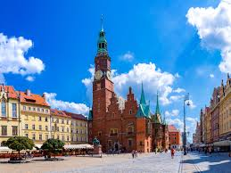

Subpages
Best landmarks of Wroclaw!

-
Churches
- Archikatedra św. Jana Chrzciciela we Wrocławiu
- kościół św. Antoniego z Padwy we Wrocławiu
- kościół św. Bonifacego we Wrocławiu
- kościół św. Barbary
- kościół pw. Bożego Ciała
- kościół par. pw. św.św. Doroty i Stanisława
- Bazylika św. Elżbiety we Wrocławiu
-
Parks and gardens
- Park Szczytnicki
- Park Południowy
- Mała Sobótka
- Ogród Botaniczny Uniwersytetu Wrocławskiego
-
Fortifications
- brama Oławska
- most Oławski
- basteja, ul. Słowackiego
- relikty bastionu bramy Mikołajskiej
- bastion ceglarski „Wzgórze Polskie”
-
Railway stations
- dworzec Dolnośląski
- dworzec Główny
- kotłownia kolejowa stacji Wrocław Główny
- zespół dworca Górnośląskiego
- dworzec pocztowy
- dworzec Świebodzki
-
Bridges
- most Grunwaldzki
- most Mieszczański
- most Młyński
- most Oławski
- most Osobowicki
- most Piaskowy
- most Pomorski
- most Trzebnicki